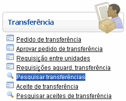
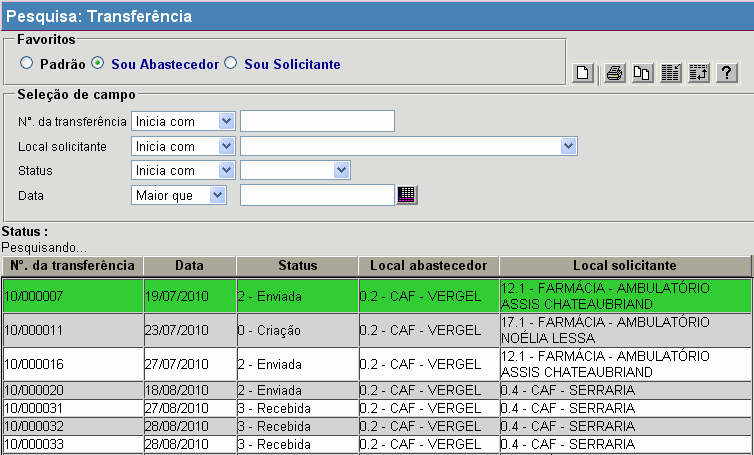
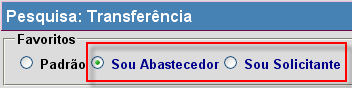
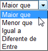
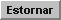
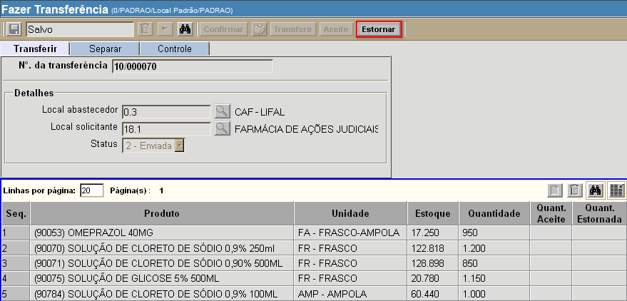
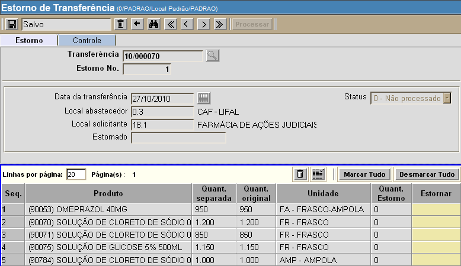
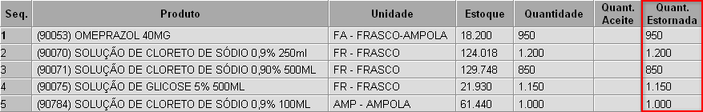
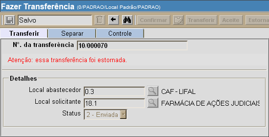

Pesquisar Transferências [ Voltar ]Utilize esta tela para localizar e abrir registros de transferências. Veja também como processar um Estorno de transferência. O formulário "Pesquisar Transferências" encontra-se dentro do menu "Transferência". 
Ao clicar no formulário, o sistema exibirá a seguinte tela: 
1º Passo: configure os filtros da pesquisa para localizar a transferência desejada. Antes de utilizar os filtros disponíveis para refinar a pesquisa, certifique-se de selecionar a pesquisa favorita mais adequada: Sou Abastecedor ou Sou Fornecedor (ver imagem abaixo). 
Os filtros disponíves para auxiliar a localização da transferência são:
Exemplos: para localizar
transferências de uma determinada data, utilize a opção "Igual a" e informe
a data desejada; ou, para pesquisar transferências criadas após uma
data específica, selecione a opção "Maior
que" e informe a data de referência.

À medida que os filtros são preenchidos, os resultados são exibidos automaticamente na tabela de resultados. Para abrir uma transferência na tela "Fazer transferência", selecione o registro desejado com um clique. Estorno de transferênciaVocê pode decidir desfazer uma transferência já realizada no sistema. Lembre-se que só é possível estornar uma transferência caso haja estoque o suficiente no local para os produtos do estorno.1° Passo: após abrir o registro de transferência na tela "Fazer transferência", clique no botão . Observe na imagem abaixo que o status desta transferência é "2 - Enviada" e o campo "Quant. estornada" da grade é igual a zero. Isto quer dizer que este registro possui um ou mais produtos passíveis de estorno. .
Após clicar no botão , a tela "Estorno de transferência" será aberta para a transferência em questão. Ela carregará os dados dos produtos contidos na transferência que ainda não foram estornados. 
2° Passo: informe no campo "Estornar" quais produtos deseja estornar. Ao clicar no campo "Estornar" correspondente a um produto, você pode selecionar as opções Sim ou Não. É necessário preencher este campo para todos os produtos da transferência. Se desejar, utilize o botão para marcar todos os produtos como Sim, ou seja, que devem ser estornados. Do contrário, utilize o botão para especificar que nenhum dos produtos deve ser estornado. Observação: ao menos um produto deve ser marcado como "Sim" para que o estorno possa ser realizado. 3° Passo: após especificar quais produtos devem ser estornados, clique no botão  para salvar as informações. para salvar as informações.4° Passo: clique no botão  para
concluir o estorno. Após
o processamento do estorno, os produtos estornados e respectivas
quantidades serão exibidas no registro original da transferência. para
concluir o estorno. Após
o processamento do estorno, os produtos estornados e respectivas
quantidades serão exibidas no registro original da transferência.
Caso toda a transferência tenha sido estornada, uma mensagem será exibida no registro da transferência.  |